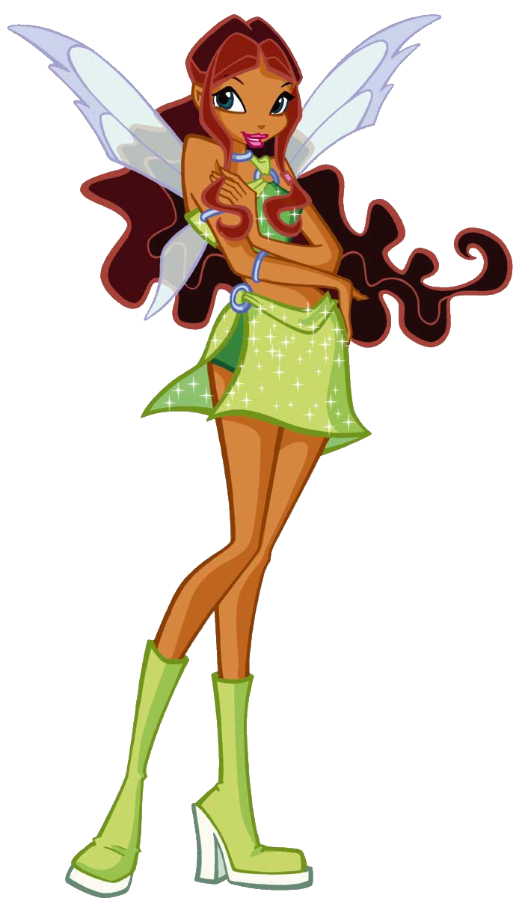

Aisha, a fada das Ondas
Aisha é a princesa e Fada Guardiã de Andros!
Idade: 17 anos
Aniversário: 15 de Junho
Biografia:
Aisha é a fada das Ondas e dos Fluidos, e Princesa de Andros, o planeta oceano. Nasceu no dia 15 de junho e seu signo encantado é a Quimera. Juntou-se às Winx na segunda temporada para pedir ajuda para salvar suas amiguinhas, as Pixes, na qual a sua é Piff, a pixie do sono perfeito. Aisha tem personalidade forte, graças ao modo como foi criada em Andros, além de falar muitos idiomas, é uma ótima dançarina. Sempre que alguma amiga precisa, lá esta ela, sempre disposta a ajudar. Amiga dos peixes e das sereias, adora estar em forma e se divertir. A coisa que mais gosta de fazer é nadar, seus poderes são baseados nos fluidos e Ondas, e ela controla uma substância roxa que pode assumir qualquer forma e consistência: o Morphix. Além disso, ela está sempre procurando uma nova aventura, além de não ter medo de mergulhar fundo.
Poderes:
Poder das ondas: Controle sobre os fluidos, e resistência embaixo d'água.
Curiosidades:
1. As Pixies confiam muito nela.
2. Consegue nadar extremamente rápido.
3. Ela é fortemente contra envolvimentos românticos com os meninos.